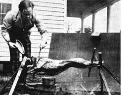

MOTHER reader Paul Niemi has also butchered a few goats in his day . . . and, while his methods closely parallel those used by the Solbergs, he does have a few additional ideas to pass along.
"Some authorities recommend penning up the animal you intend to butcher for 24 hours before the kill. They say that no food and only a little water should be fed to the goat during this period to shrink its paunch. But we've butchered goats without restricting them in this way first, and I can't see that it causes any problems."
Paul also lists the six butchering "tools" he uses when slaughtering a goat: butcher knife, strong cord (for hanging the kill), clean water, saw, clean rags, and a .22 rifle capable of firing long rifle, hollow point cartridges.
"The most humane and efficient way for a homesteader to kill a goat in my opinion," says Mr. Niemi, "is with a high-speed, long rifle, hollow point .22 slug ... IF you handle the job right. Remember, however, that a goat's head is designed for butting and a head-on shot may just wound the animal. We prefer to spread a handful of grain out on the ground. Then, when the goat's head is down, we put a carefully aimed shot into the back of its skull. When done properly, this method drops the animal like a rock. Slit the throat immediately, cut the head off, and hang the carcass to drain."
Paul also recommends tying off the gullet once the head has been removed so that the contents of the goat's stomach can't spill out while the carcass is being skinned. And he likes to "fist" much of the hide off while he's doing that skinning. This is done by "clenching the hand into a fist and, while keeping the thumb next to the carcass, jabbing or pushing the hand between the pelt and the carcass. Pull on the free section of hide with the other hand."
Whole goat, barbecued over an open fire, is a popular fall "get together" meal around the Niemi homestead (see photo) . . . which means that Paul frequently does away completely with the need to cutup, package, and freeze the goats he butchers.
|
 PHOTO BY THE AUTHOR |
|
|